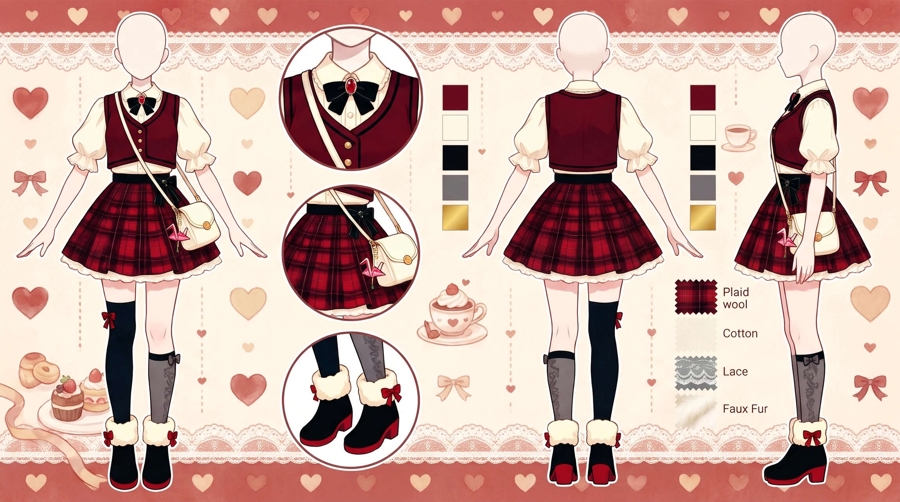
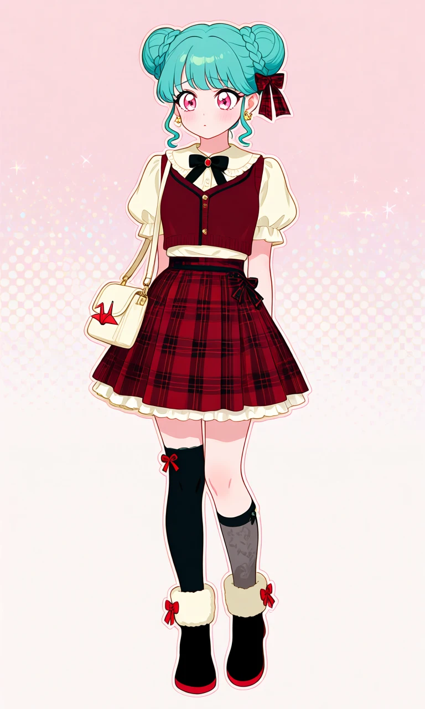
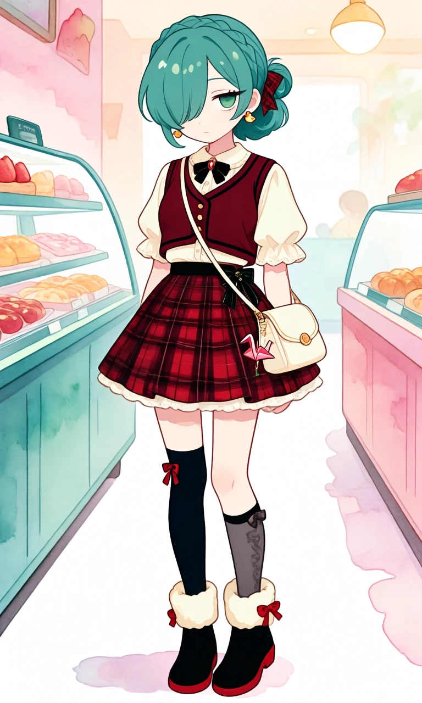

Cranberry & Cream

Outfit Prompt
She wears a cute, feminine red-plaid preppy outfit that bridges her ornate childhood clothes and her more fashionable adult style. She wears a fitted cream-colored blouse with a high rounded collar, softly puffed short sleeves, delicate ruffled edges, and a small black velvet bow with a tiny red jewel at the throat.
Over the blouse is a deep-red cropped knit vest with subtle black trim and tiny gold buttons, fitted neatly at her waist without exposing her stomach.
She wears a high-waisted red-and-black tartan pleated skirt, falling to mid-thigh, with a narrow black waistband and a small decorative bow at one hip. A very subtle white ruffle peeks beneath the skirt, echoing the elaborate ruffles of her childhood dress without making the outfit look childish.
She wears asymmetrical legwear as an early hint toward her adult fashion: one black knee-high sock decorated with a tiny bow near the top, and one sheer charcoal-gray knee-high sock with a subtle pattern. On her feet are cute black ankle boots with soft cream faux-fur cuffs, red soles, and small red ribbon bows.
A small red-and-black plaid ribbon decorates one braided bun, much simpler than the enormous childhood bow. She wears tiny gold bird-shaped earrings and carries a small cream shoulder bag decorated with a delicate red origami-crane charm.
Her overall appearance is sweet, polished, slightly shy teenage fashion—preppy and feminine with romantic details, still somewhat conservative and carefully coordinated. The red plaid motif remains strongly recognizable from her childhood, while the shorter skirt, asymmetrical socks, fitted silhouette and fashionable accessories begin transitioning toward her adult style.
Outfit Examples



